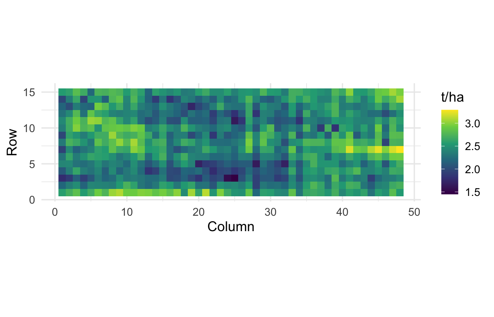
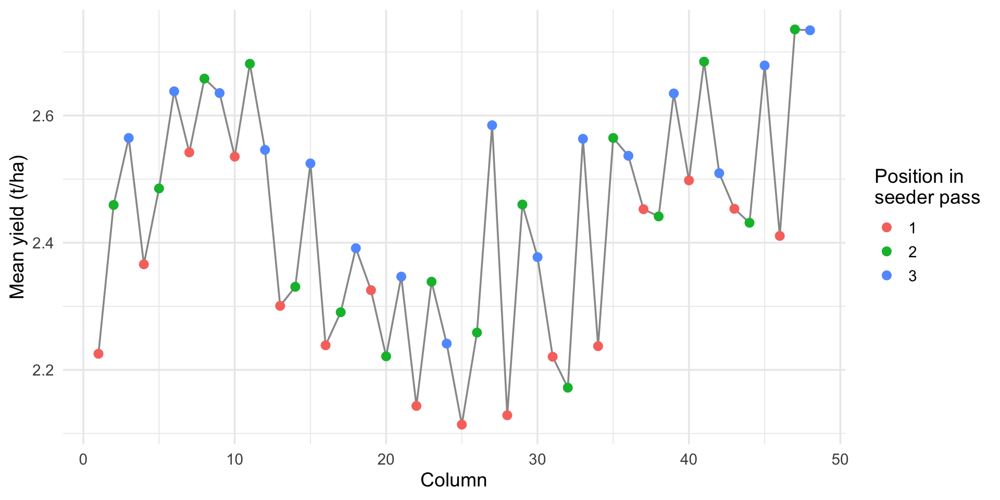
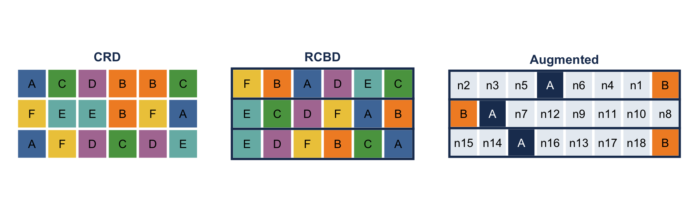
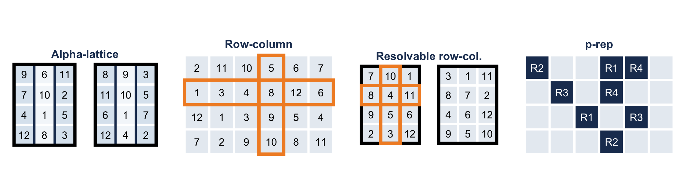
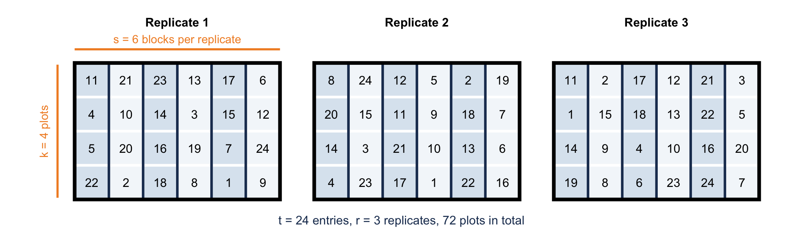
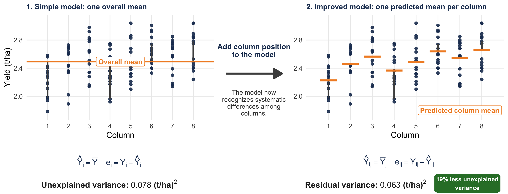
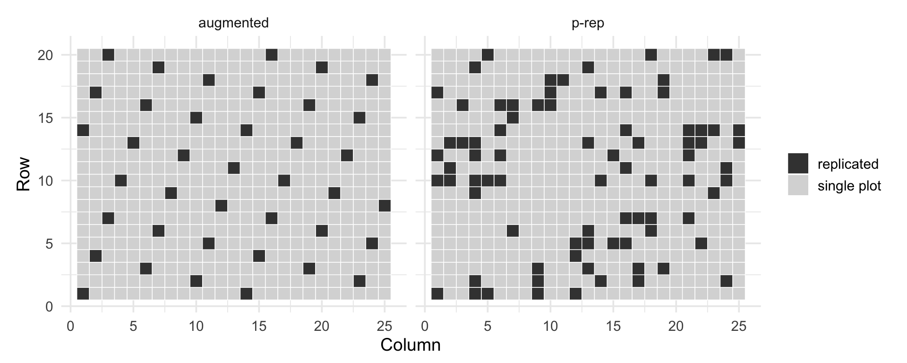

Run 00_install_packages.R and let it run while we talk: FielDHub takes a few minutes to install
After the break we start coding with these files. They are your own copy, separate from the course project, so a Git update never clashes with your work.
Block 1
Why design matters
Three principles (Fisher, 1920s)
Principle
What it means
Why
Randomization
Assigns experimental units to treatments at random
Prevents systematic advantage and supports a valid estimate of experimental error
Blocking
Groups similar experimental units together
Controls for known sources of variation
Replication
Repeats each treatment enough times
Allows experimental error to be estimated and improves the precision of treatment means
A field without genotypes
A uniformity trial uses one variety sown everywhere.
Therefore, every observed difference is due to the field, not the genotype.
Williams and Luckett (1988), barley uniformity trial, 720 plots, agridat::williams.barley.uniformity

Spatial variation in the field
A LOESS surface reveals gradual spatial variation across the field.
How big is the field variation?
williams |>summarise(min =min(yield), max =max(yield), sd =sd(yield))
min max sd
1 1.45 3.29 0.2891378
One variety: 1.45 to 3.29 t/ha, SD 0.29 t/ha
Two genotypes that are different by 0.3 t/ha could easily be switched up based on where they’re located.
Neighbouring plots are more similar than distant ones
Variation is not the same in rows and in columns
Field variation is the noise in which we look for genetic differences.
Variation caused by management

Sown with a three-plot seeder: first-position columns yield about 0.1 to 0.2 t/ha less. Small blocks can capture this; large blocks cannot.
This trial shows that a field that looks the same might not be the same. Some of that variation may be caused by the machinery. So, when we compare different genotypes later, we need to make sure the groups are random, that we have multiple replicates, and that we have blocks to avoid mixing up the effect of management or location with the genetic effect.
Breeding trials are special
Many entries: 100 to thousands of lines, not 4 treatments
Costly replication: in early generations, seed for one plot only
Heterogeneous field in more than one direction
300 genotypes in a complete block = a block too large to be uniform.
Solution: incomplete blocks, smaller than the number of genotypes.
Different stages of a typical evaluation process in cassava breeding.
Uniform conditions only: growth chamber, some greenhouse trials
RCBD
Every block has every genotype once
Few genotypes (up to about 20 to 30), advanced trials
Augmented
New lines in 1 plot, checks in every block
Early generations, many lines
Classical designs on the field

Each box is a plot; letters are genotypes (schematic examples).
CRD: genotypes anywhere, no blocks
RCBD: each block (here a row) has every genotype once
Augmented: checks A and B in every block; each new line (n) in one plot only
Designs with incomplete blocks
Design
Blocks in
Complete replicates (resolvable)
Alpha-lattice
One direction
Yes
Row-column
Rows and columns
No
Resolvable row-column
Rows and columns
Yes
p-rep
Rows, columns, spatial terms
No
Alpha-lattice: t = s x k entries, s blocks of k plots per replicate (Patterson and Williams, 1976)
Row-column: every row and every column is an incomplete block
p-rep: only a fraction of the lines replicated (Cullis et al., 2006)
Incomplete blocks on the field

Numbers are entries (schematic examples). Thick black line: replicate. Thin blue line: incomplete block. Orange: one row and one column.
Alpha-lattice: each replicate is cut into small blocks
Row-column: every row and every column is a block
p-rep: dark plots are lines in two plots, light plots are lines in one plot
Alpha-lattice in plain words

t: the number of entries (genotypes). Here t = 24
k: plots per incomplete block, the block size. Here k = 4
s: blocks per replicate, s = t / k. Here s = 6
r: the number of replicates. Here r = 3
Total plots: t × r = 72
This is the real oat trial of the exercise this afternoon (john.alpha).
Incomplete and resolvable
Incomplete block: a block that holds only some of the genotypes, 4 of the 24. Blocks stay small and uniform, but each one has only a few genotypes.
Resolvable: every replicate still contains all 24 genotypes, so each replicate can be treated as a complete block. The blocks inside it are the incomplete ones.
In FielDHub: alpha_lattice(t = 24, k = 4, r = 3). t must be divisible by k. (We try k = 5 in the exercise and see what happens.)
Every design has its model
Each restriction of the randomization (replicate, block, row, column) becomes one term in the model of the trial.
Y: observed response of a plot, for example yield (t/ha)
μ: overall mean of the trial
Gk: effect of genotype k. This is what we compare.
Ri: effect of replicate i
Bj(i): effect of incomplete block j inside replicate i. “j(i)” reads “j within i”.
Rowj(i), Coll(i): effect of row j and column l inside replicate i
ε: experimental error: what the model cannot explain
G is what we compare. R, B, Row and Col are there to remove field variation, so the comparison between genotypes is fairer.
Models of the classical designs
CRD:Yik = μ + Gk + εik
No block: genotype k in plot i, anywhere in the field. All the field variation goes to the error.
RCBD:Yik = μ + Ri + Gk + εik
Ri is the complete block (replicate) i. It removes the differences between blocks.
Augmented:Yjk = μ + Bj + Gk + εjk
Bj is block j (or rows and columns when the layout is a grid). Gk covers the checks and the new lines. The repeated checks give the estimate of the error.
Models: incomplete-block designs
Alpha-lattice:Yijk = μ + Ri + Bj(i) + Gk + εijk
Replicate i, and incomplete block j within replicate i.
One variety everywhere, so all this spread is noise, not genetics.
How a model reduces unexplained variation
Residual variance is the variation left after accounting for the effects included in the model.

Residual = observed value − predicted value
A relevant explanatory variable helps the model account for systematic variation, leaving less unexplained variation.
SED and LSD
SED: standard error of the difference between two means: how much a difference moves by chance
For equal replication: SED ≈ √(2 × residual variance / r), where r is the number of replicates
LSD ≈ 2 × SED: a difference must be larger than this to be called real
residual variance
replicates
SED
LSD (t/ha)
0.16
2
0.40
0.80
0.16
4
0.28
0.56
0.08
2
0.28
0.56
0.08
4
0.20
0.40
Halving the residual variance, or doubling the replicates, shrinks the SED by the same factor. A smaller SED means we can detect smaller differences.
From residual variance to a decision
Two varieties: ȲA = 3.10 t/ha and ȲB = 2.70 t/ha. Observed difference: 0.40 t/ha. Is A really better, or is it only field and experimental variation?
SED: how much a difference between two means moves by chance. It measures the uncertainty around the difference, not the difference itself
LSD ≈ 2 × SED: the smallest difference we call real
Case
SED
LSD
Observed 0.40 t/ha
Precise trial
0.15
0.30
larger than the LSD: different
Noisy trial
0.25
0.50
smaller than the LSD: cannot say
Residual variance → SED → LSD → comparison of means. Same difference, different decision.
Where the SED formula comes from
Each treatment has r replicates and the model leaves a residual variance σ².
One mean (average of r plots): variance = σ² / r
Difference of two means (independent, same precision): the variances add, σ² / r + σ² / r = 2σ² / r
Square root gives the standard error of the difference:
SED = √(2σ² / r)
More replicates (r up) or a smaller residual variance (σ² down) means a smaller SED
With incomplete blocks or rows and columns, the SED is not the same for every pair of genotypes: the model reports an average SED
Where the LSD comes from
LSD = Least Significant Difference: the value that the difference between two means must exceed to call them different.
LSD = t × SED, with t = tα/2, df
t: critical value of the t distribution
α: significance level, usually 0.05 (two-sided test, so α/2 in each tail)
df: degrees of freedom of the error (the model reports them)
SED: standard error of the difference
error df
5
10
20
30
60
120
t (α = 0.05)
2.57
2.23
2.09
2.04
2.00
1.98
With enough degrees of freedom t is close to 2, so we use LSD ≈ 2 × SED
Decision rule: if |ȲA − ȲB| > LSD, the two means are significantly different
Block 4
Comparing designs on a real field
The idea
Lay each design over the uniformity trial as if 360 genotypes had been sown in 2 replicates (720 plots).
One variety only: the true genotype differences are zero
Everything the model calls error is real field variation the design did not remove
Nothing is simulated
We measure each design by the average SED (previous slide). Smaller is better.
Result: precision of each design
design
sed
LSD
efficiency vs RCBD (%)
CRD
0.291
0.582
96
RCBD
0.285
0.570
100
Alpha-lattice
0.256
0.512
124
Resolvable row-column
0.196
0.393
211
Same field, same plots, same seed. The resolvable row-column design is as precise as an RCBD with about twice the replicates.
What we learned
RCBD gains nothing over CRD here. Two large blocks (the two halves of the field) have almost the same mean, so they remove almost no variation.
Small blocks help. Alpha blocks follow the columns and capture column-to-column variation, including the seeder pattern.
Blocking in two directions helps most. This field varies along rows and columns.
A different randomization changes the numbers slightly, not the ranking.
Block 5
Early generations: augmented and p-rep
M2 to M4: many lines, little seed
Most lines can be sown in one plot only.
Design
Replicated
Error estimated from
Augmented
Only the checks (at least the parent)
Check plots
p-rep
10% to 30% of the test lines (2 plots)
Replicated test lines
Both test 460 entries in 500 plots. Which one is better? We can measure it on a real uniformity trial.
The two layouts

Dark: checks (augmented) or replicated test lines (p-rep).
Block 6
Choosing a design and FielDHub practical
Choosing a design by breeding stage
Stage
Entries
Seed
Design
M2 to M3, early generations
100s to 1000s
1 plot per line
Augmented (parent as check) or p-rep; spatial analysis
Preliminary yield trial
100 to 400
2 replicates
Alpha-lattice or resolvable row-column
Advanced yield trial
20 to 60
3 or 4 replicates
Alpha-lattice; RCBD only if few entries, uniform field
Multi-location
10 to 50
2 to 4 per location
Alpha-lattice or resolvable row-column per location
Greenhouse, platform
Any
Benches, trays
Row-column: bench rows and columns are real blocks
Two practical rules
1. Choose the block size from the field, not from the number of entries. Blocks of 5 to 20 plots are common.
2. Write the layout before sowing (replicate, block, row, column) and keep the row and column of every plot. Without coordinates, field effects cannot be modelled later.
FielDHub
R package and Shiny app (Murillo et al., 2021).
FielDHub::run_app() # opens the app in the browser
Always set seed: same seed, same layout, reproducible randomization.
The exercises in the ZIP
Exercise 0 (20 min):Exercise0_variance_and_SED.Rmd. Calculate a variance, a residual variance and an SED yourself, on a real barley field
Exercise 1:Exercise1_generate_designs.Rmd. Generate CRD, RCBD, alpha-lattice and row-column layouts for 24 entries, read the field book, and see what happens when k does not fit
Exercise 2 (if time allows, or homework):Exercise2_my_own_design.Rmd. Design a trial for your own material, with a seed, and export the field book
Write your findings at the end of each file. Knit only at the end, if time allows
Stuck? Ask. Every box has a # HINT line above the blank.
Practical: a field book with your entries
entries <-data.frame(ENTRY =1:30,NAME =c("Parent", paste0("M3-", sprintf("%03d", 1:29))))design <-alpha_lattice(t =30, k =5, r =3, seed =2026, data = entries)field_book <- design$fieldBook |>transmute(location ="Skopje", year =2027, rep = REP, block = IBLOCK,plot = PLOT, geno = TREATMENT)head(field_book)
Patterson, H. D. & Williams, E. R. (1976). A new class of resolvable incomplete block designs. Biometrika, 63(1), 83-92.
Cullis, B. R., Smith, A. B. & Coombes, N. E. (2006). On the design of early generation variety trials with correlated data. JABES, 11(4), 381-393.
Williams, E. R. & Luckett, D. J. (1988). Uniformity data in the design and analysis of cotton and barley variety trials. Aust. J. Agric. Res., 39(3), 339-350.